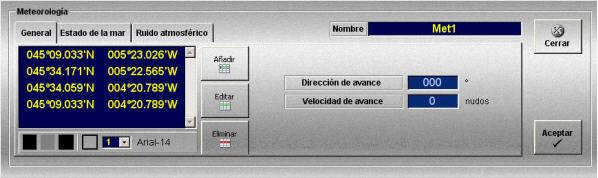
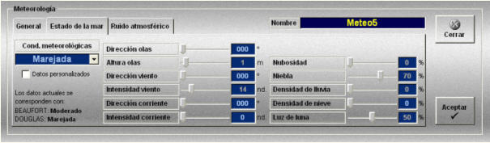
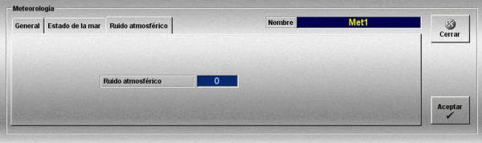

Meteorología
Las zonas meteorológicas están formadas por una zona geográfica delimitada por un polígono cerrado con unas condiciones meteorológicas uniformes que durante la ejecución del ejercicio afectarán a las unidades que se encuentren en el interior de dicha zona.
La creación y edición de estas zonas se realiza mediante la ventana de Meteorología. Esta ventana tiene tres solapas, General, Estado del Mar y Ruido Atmosférico, al seleccionar cada una de ellas el contenido de la ventana varía, presentando los datos necesarios para la definición completa de la zona.
A continuación se describen los datos y botones que incluye esta ventana.
Nombre: Nombre de la zona meteorológica.
Formato: caracteres alfanuméricos.
Datos y botones de la solapa General:

Esta solapa contiene la lista de puntos que definen el polígono que delimita la zona meteorológica, y los datos de movimiento de la misma.
Botones de manejo de la lista de puntos que definen el polígono:
Editar: Este botón sirve para mostrar el gráfico de la zona meteorológica en la presentación cartográfica y para modificar los datos de los puntos del polígono.
Cuando se abre la ventana para crear una nueva zona, la lista de puntos está vacía y el botón Editar está pulsado, en estas condiciones, al picar con el botón izquierdo del ratón sobre la presentación cartográfica, se añaden puntos a la lista a la vez que se van dibujando sobre la carta.
Cuando se abre la ventana para consultar los datos de una zona ya creada, al pulsar el botón Editar, el gráfico de la zona aparece en la presentación cartográfica. Mientras el botón Editar esté pulsado, se pueden seleccionar los puntos picando sobre ellos con el botón izquierdo del ratón, y cambiarlos de posición arrastrando el ratón hasta la nueva posición.
Nota: Durante la edición de objetos gráficos (zonas meteorológicas, balizas, mapas de viento y corriente, rutas…) se anulan las funciones asignadas a los botones del ratón para control de la presentación cartográfica (posicionar hook, zoom+, zoom- demora/distancia…), por tanto para ver el gráfico de la zona meteorológica hay que hacer zoom sobre la zona de la carta en la que se encuentra dicha zona antes de pulsar el botón Editar.
Añadir: Al pulsar este botón se inserta un nuevo punto entre el punto seleccionado y el siguiente. También se pueden insertar puntos seleccionando con el ratón un segmento del gráfico de la zona meteorológica y pulsando la tecla "Insertar".
Nota: Sólo se pueden añadir puntos cuando se está mostrando el gráfico de la zona meteorológica, es decir, si el botón Editar está pulsado.
Eliminar: Al pulsar este botón se elimina de la lista el punto seleccionado. También se pueden eliminar puntos seleccionando con el ratón un punto del gráfico de la zona y pulsando la tecla "Suprimir".
Nota: Sólo se pueden eliminar puntos cuando se está mostrando el gráfico de la zona meteorológica, es decir, si el botón Editar está pulsado.
Botones de recursos gráficos

Estos botones sirven para definir el color, el estilo y el tipo de letra que se aplica al gráfico de la zona meteorológica.
El funcionamiento de los botones de la barra de recursos gráficos se describe en el apartado Definición de Recursos Gráficos.
Datos generales:
Dirección de avance: Dirección hacia la que se desplaza la zona.
Unidades: grados
Rango: 0.0- 360.0
Velocidad de avance: Velocidad con la que se desplaza la zona.
Unidades: nudos
Rango: 0.0- 100.0
Datos y botones de la solapa Estado de la mar:

Condiciones meteorológicas: Este campo es un desplegable que muestra las opciones que se hayan establecido por defecto en el fichero de configuración Ulises.ini. Al seleccionar cualquier opción de este campo, automáticamente se establecen los valores correspondientes a dicha opción para los campos Altura de Olas, Intensidad de Viento, Nubosidad, Niebla, Densidad de Lluvia, y Luz de Luna. Por defecto se configuran las siguientes opciones:
| Opciones | Altura de las Olas |
Intensidad del Viento |
Nubosidad | Niebla | Densidad de Lluvia |
Luz de Luna |
| Calma | 0 | 0 | 0 | 5 | 0 | 50 |
| Rizada | 0.1 | 5 | 0 | 50 | 0 | 50 |
| Marejadilla | 0.8 | 11 | 0 | 60 | 0 | 50 |
| Marejada | 1 | 14 | 0 | 70 | 0 | 50 |
| Fuerte Marejada | 2 | 19 | 10 | 80 | 10 | 10 |
| Gruesa | 2.5 | 25 | 20 | 90 | 20 | 10 |
| Muy Gruesa | 4 | 30 | 30 | 90 | 30 | 10 |
| Arbolada | 6 | 50 | 40 | 100 | 40 | 10 |
| Montañosa | 8 | 60 | 50 | 100 | 40 | 10 |
| Enorme | 12 | 70 | 60 | 100 | da40ta | 10 |
Datos personalizados: Si esta casilla no está seleccionada, los campos que se rellenan por defecto al seleccionar una de las condiciones anteriores aparecen desactivados. Al seleccionar esta casilla, estos campos se habilitan, y se pueden modificar.
Si una vez modificados se quita la marca de esta casilla, el sistema muestra un mensaje al operador indicando que se perderán los cambios introducidos y se recuperarán los valores por defecto.
Dirección de las olas: Dirección hacia la que se desplazan las olas.
Unidades: grados
Rango: 0.0 - 360.0
Altura de las olas:
Unidades: metros
Rango: 0.0 - 15.0
Dirección del viento:
Unidades: grados
Rango: 0.0 - 360.0
Intensidad del viento:
Unidades: nudos
Rango: 0.0 - 70.0
Dirección de la corriente:
Unidades: grados
Rango: 0.0 - 360.0
Intensidad de la corriente:
Unidades: nudos
Rango: 0.0 - 50.0
Nubosidad: Factor que determina el aspecto del cielo del visual, en cuanto a presencia de nubes.
Unidades: porcentaje
Rango: 0 - 100
Niebla: Intensidad de la niebla.
Unidades: porcentaje
Rango: 0 - 100
Densidad de la lluvia: Intensidad de la lluvia.
Unidades: porcentaje
Rango: 0 - 100
Densidad de la nieve: Intensidad de la nieve.
Unidades: porcentaje
Rango: 0 - 100
Luz de luna: Intensidad de la luz de la luna.
Unidades: porcentaje
Rango: 0 - 100
Todos estos datos se pueden introducir de dos maneras tecleando el valor directamente sobre el campo o desplazando la barra anexa.
Beaufort: Cuando se selecciona una altura de olas, en la parte inferior izquierda de la ventana se actualiza el valor de la escala Beaufort correspondiente a la intensidad de viento seleccionada. Puede tomar los siguientes valores:
- Calma
- Ventolina
- Flojito
- Flojo
- Moderado
- Fresquito
- Fresco
- Frescachón
- Temporal
- Temporal Fuerte
- Temporal Duro
- Temporal muy Duro
- Huracanado
Douglas: Cuando se selecciona una intensidad de viento, en la parte inferior izquierda de la ventana se actualiza el valor de la escala Douglas correspondiente a la altura de olas seleccionada. Puede tomar los siguientes valores:
- Calma
- Rizada
- Marejadilla
- Marejada
- Fuerte Marejada
- Gruesa
- Muy Gruesa
- Arbolada
- Montañosa
- Enorme
Datos y botones de la solapa Ruido atmosférico
Ruido atmosférico: Nivel de ruido atmosférico.

Unidades: adimensional
Rango: 0 - 10
Las zonas meteorológicas creadas podrán ser añadidas a los Escenarios, los cuales a su vez pueden ser incorporados en distintos Ejercicios.
Las zonas meteorológicas se muestran gráficamente en la Presentación Cartográfica del instructor, tanto durante la preparación como durante la ejecución de ejercicios que incluyan zonas meteorológicas.